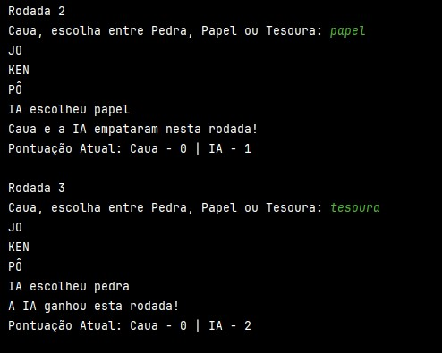
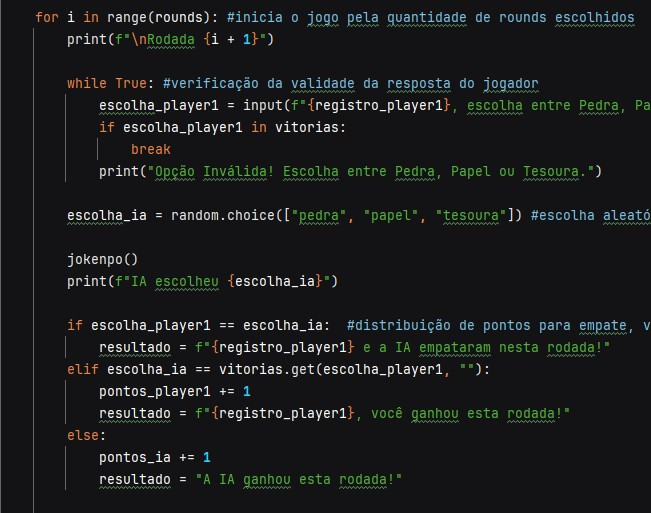
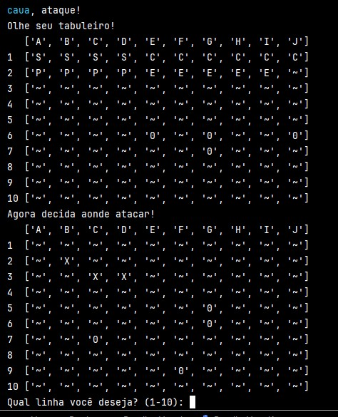
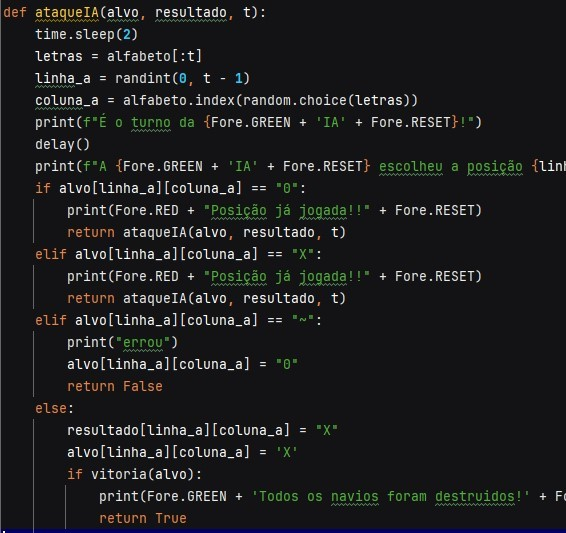

Nesta disciplina, desenvolvi a capacidade de pensar de forma estruturada para resolver problemas computacionais por meio da criação de algoritmos. Aprendi a trabalhar com variáveis, operadores lógicos e aritméticos, estruturas de decisão, repetições, vetores e funções.
Um jogo interativo que simula a tradicional disputa, permitindo ao usuário jogar multijogador ou contra o computador, reforçando conceitos de lógica condicional e estrutura de repetição.
 Versão programada do clássico jogo de tabuleiro, programada para praticar matrizes, validações de jogadas e controle de fluxo em Python.
 